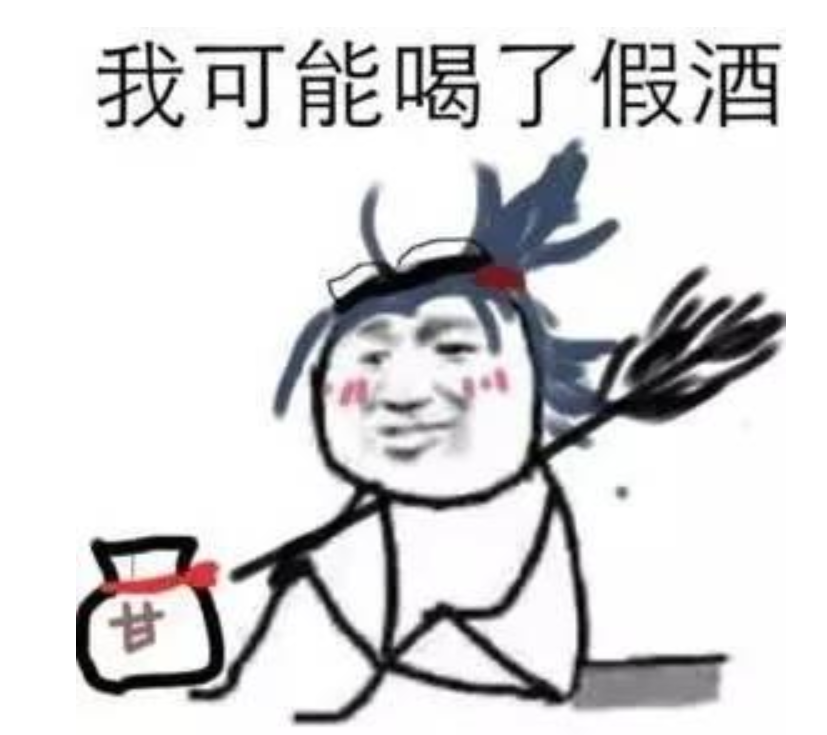
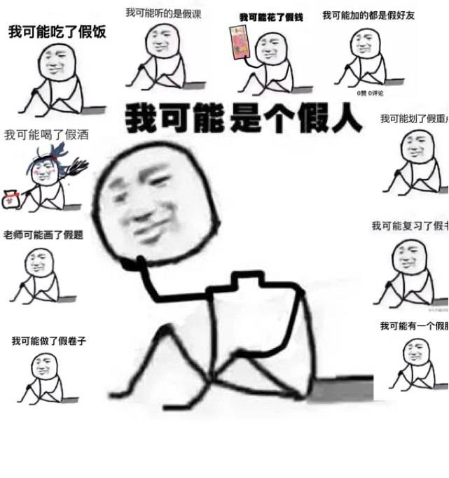

大约在2016年年底的时候，一个“我可能是个假人”的表情迅速在网络上走红，并且由这个表情衍生出了一系列“我可能X了假XX”的 表情包。
笔者认为，“我可能X了假XX”表达了大家对于生活当中的不愉快的吐槽。例如，“我可能上了个假大学”，可能表达了对自己大学和别人的大学的差距之间的吐槽；“我可能考了场假试”，可能表达了对考试失利的吐槽；“我可能看了本假书”，可能表达了对自己读了书却收获没有别人多的吐槽。
| 表示自己的笔不好用 | |
|---|---|
| 表示自己的大学不如别人 | |
| 表示喝的酒不好喝 |  |
| 表示自己不聪明 |  |
| 综合 |  |